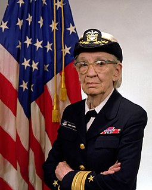

Mulheres na tecnologia
Celebramos e promovemos as conquistas das mulheres na tecnologia, destacando as pioneiras e inovadoras que moldam o futuro do setor. Nossa missão é inspirar a próxima geração de líderes femininas, proporcionando visibilidade e reconhecimento às mulheres que estão fazendo a diferença.
Grace Hopper
Desenvolvimento do Compilador
Grace Hopper desenvolveu o primeiro compilador para uma linguagem de programação. Um compilador é um programa que traduz o código escrito em uma linguagem de programação de alto nível (mais próxima da linguagem humana) para uma linguagem de máquina que os computadores podem entender. Este trabalho foi fundamental para tornar a programação mais acessível e eficiente.
Além de Grace Hopper, também podemos destacar outras mulheres que foram fundamentais para o desenvolvimento da tecnologia:
- Ada Lovelace
- Hedy Lamarr
- Radia Perlman
- Sheryl Sandberg
- Susan Wojcicki